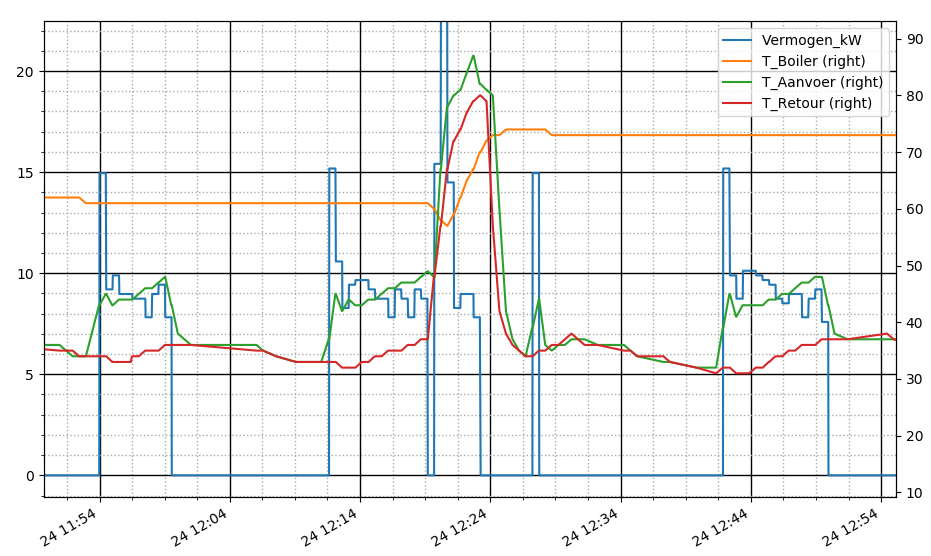
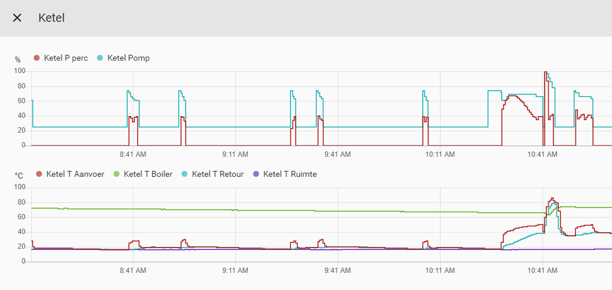
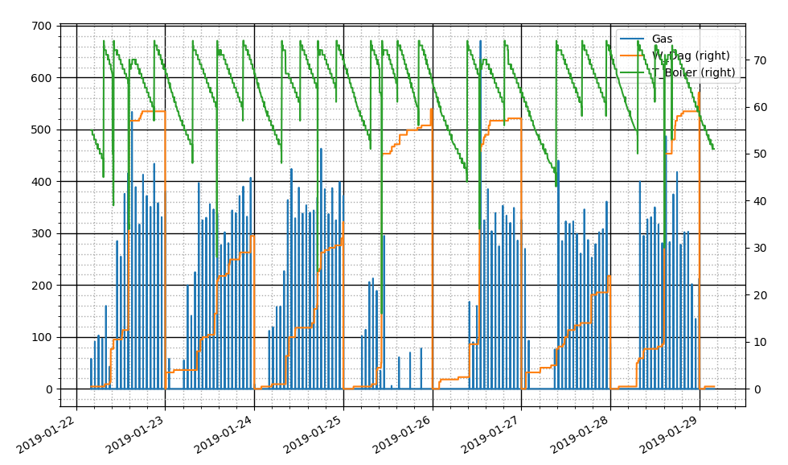
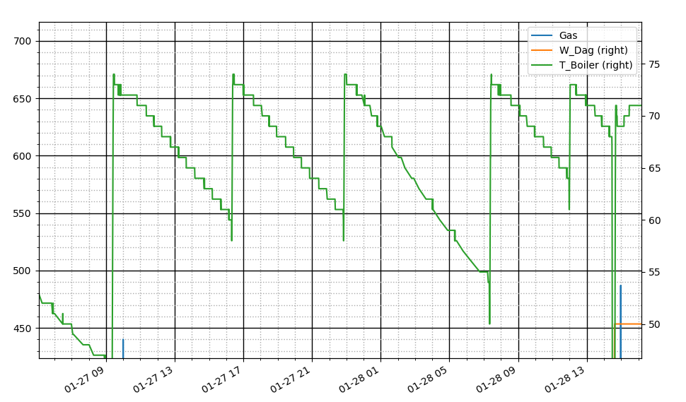
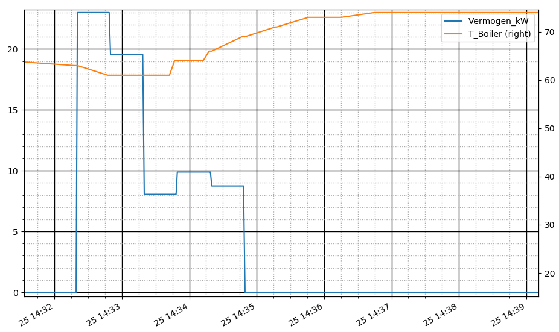
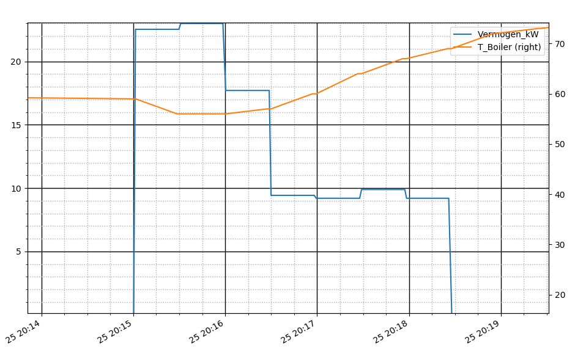
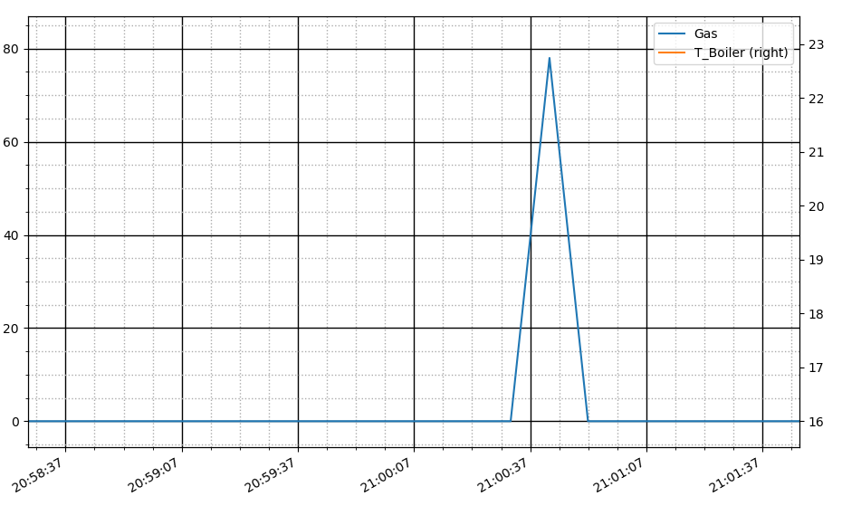

Boiler
13 February, 2019
0:19
Samenvatting
Omdat we ons totale gasverbruik in beeld willen krijgen, om enerzijds te kunnen vergelijken met het echte verbruik en anderzijds om te onderzoeken waar besparingen te behalen vallen.
Omdat we in eerste instantie nogal schrokken van verbruik, dat ook nog eens helemaal niet rijmde met gegevens van weliswaar een andere fabrikant, hebben we via een aantal methoden de waarden met elkaar vergeleken. Er is geen goede verklaring gevonden voor de verschillende meetresultaten.
Momenteel houden we aan dat het op temperatuur houden van de boiler 900 kWh = 90 m3 gas op jaarbasis bedraagt.
Water_Warmte_Capaciteit = 1.16E-3 # kWh / ( Celsius * liter )
Aantal opwarmingen per dag bedraagt 3..4, dus gemiddeld 3.5 ( s'nachts wordt de boiler uitgeschakeld )
Dus op jaar basis is het aantal opwarmingen 3.5 * 365 = 1278
Als we verschillende meetmethoden met elkaar vergelijken, komen we tot de volgende tabel,
Hierbij moet opgemerkt worden dat het max van methode 3 en 4 op exact hetzelfde moment gemeten zijn.
Methode | Min/Opwarming [Wh] | Max/Opwarming [Wh] | Min/Jaar [kWh] | Max/Jaar [kWh] |
1=percentueel vermogen | 500 | 700 | 639 | 895 |
2=theoretisch | 211 | 211 | 231 | 308 |
3=ketelvermogen | 580 | 840 | 740 | 1077 |
4=gasverbruik |
| 842 |
| 1077 |
Methode 4 maakt gebruik van een zeer goed gekalibreerde meter, namelijk de standaard gasmeter in de meterkast.
En helaas deze methode 4 geeft zelfs aan dat we verbruik in onze eerste metingen zelfs onderschat hebben.
Hoe dit te verklaren:
In methode-2 (theoretisch), hebben we enkel het opwarmen van het water gerekend en niet de opwarming van het vat en de warmtewisselaar. Als we ons realiseren dat de warmte capaciteit van water ruwweg een factor 10 groter is dan van metaal en bovendien het gewicht van het water ook nog eens een factor 10 hoger is, is het duidelijk dat de afwijking in de orde van 1% is. Dit is dus niet de verklaring.
Het rendement van de ketel is mogelijk een heel stuk slechter bij dit soort korte piekbelastingen.
De Ketel produceert te veel warmte voor het boilervat en pompt de overblijvende energie in het cv systeem.

Dit moeten we nog eens een keer goed meten als de verwarming uitstaat.
Methode 1
Bereken de energie van een opwarming op basis van percentueel ketelvermogen.
In onderstaande figuur zien we om 10:41 een boiler opwarming.
Het gemiddeld vermogen bedraagt hier ongeveer 50% (ketel heeft een max vermogen van 24 kW).
De duur van het stoken bedraagt 3 minuten, dus in werkelijkheid ligt de tijd tussen 2.5 en 3.5 minuten.
Het energie bedraagt dus:
Minimaal:
0.5 * 24000 * 2.5 / 60 = 500 Wh
Dus per jaar 1278 * 500 / 1000 = 639 kWh
Maximaal:
0.5 * 24000 * 3.5 / 60 = 700 Wh
Dus per jaar 1278 * 700 / 1000 = 895 kWh

Screen clipping taken: 13-Feb-19, 12:12
Methode 2
Uit onderstaand plaatje blijkt dat de boiler 3 to 4 keer per dag wordt opgestookt (groene curve is de Boiler Temperatuur).

Als we inzoomen, kunnen we zien dat het boilervat wordt verwrmd van 60 graden Celsius naar 73 graden Celsius, dus een delta-T van 13 graden Celsius.

Het boilervat heeft een inhoud van 14 liter.
Energie per jaar volgens deze gegevens is dus
Aantal Opwarmingen per dag * delta-T * Boilerinhoud * warmtecapaciteit water * 365 dagen in jaar
Eén opwarming kost dus
13 * 14 * 1.16E-3 * 1000 = 211 Wh
Minimaal
3 * 13 * 14 * 1.16E-3 * 365 = 231 kWh
Oftewel 23 m3 gas
Maximaal
4 * 13 * 14 * 1.16E-3 * 365 = 308 kWh
Oftewel 31 m3 gas
Methode 3
Hier kijken we naar het ketelvermogen gedurende een opwarming.
Opgemerkt moet worden dat er wel wat verschillen zijn tussen de individuele opwarmingen.
Iedere 30 seconde verschijnt een nieuwe meetwaarde
Vermogen 23 + 19.5 +8 + 10 + 9 = 69.5 kW
Over 2.5 min
Dus deze opwarming vertegenwoordigt een energie van ( 69500 / 5 ) * ( 2.5 / 60 ) = 579 Wh
Dus per jaar 1278 * 579 / 1000 = 740 kWh

Vermogen 22.5 + 23 + 18 + 9.5 + 9 + 10 + 9 = 101 kW
Over 3.5 min
Dus deze opwarming vertegenwoordigt een energie van ( 101000 / 7 ) * ( 3.5 / 60 ) = 842 Wh
Dus per jaar 1278 * 842 / 1000 = 1076 kWh

Methode 2 gaf een waarde van 230 .. 310 Wh per opwarming.
Methode 3 geeft een waarde van 580 ..840 Wh per opwarming
Het is duidelijk dat het vermogen van de ketel hier veel te hoog (factor 2 tot 3 ) wordt aangegeven !!
Methode 4
Hier meten we het gasverbruik op dagen dat er niet gestookt wordt (zijn nu nog zeldzaam).
.
Het verbruik is hier 0.08 m3 oftewel 0.8 kWh voor 1 opwarming.
Dit is het gasverbruik van de piek die hierboven is gemeten 842 Wh, dat klopt dus exact !!
Dus per jaar 1278 * 842 / 1000 = 1077 kWh

Created with Microsoft Office OneNote 2007
One place for all your notes and information